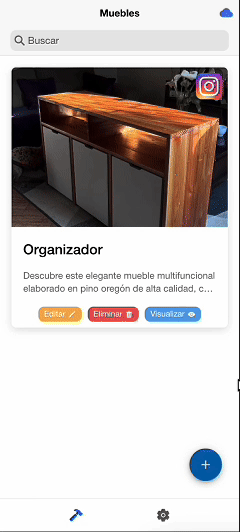

Inventory.
Del cuaderno de mi padre
al bolsillo de su taller.
Una aplicación Android para organizar su catálogo de muebles. Fotografías, materiales, cortes y costos en un solo lugar, sin volver a buscar entre hojas.
Explorar Inventory +UN PROBLEMA REAL. UNA SOLUCIÓN PROPIA.

INVENTORY / ANDROID APP